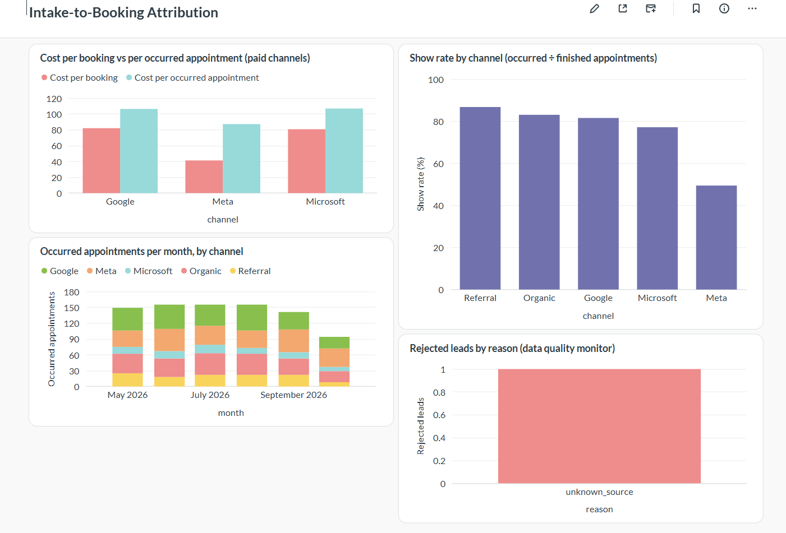
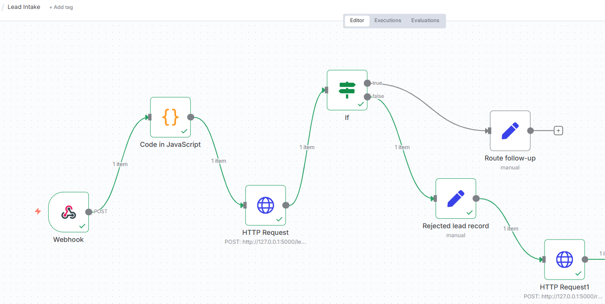

The question
A clinic that buys ads sees leads and bookings. The number that pays the bills is different: appointments that actually happen. If one channel books cheaply but its patients do not show up, the cheapest-looking channel is not the cheapest.
This project traces that path end to end: ad spend, lead, booking, occurred appointment. The problem is real; the data is synthetic. No real patient, company or ad-platform data is used, and every channel result below comes from assumptions I built into the data generator. It shows that the pipeline can expose a difference like this, not that any real channel behaves this way.
What I built
| Layer | What it does |
|---|---|
| Synthetic funnel | Five channels over six months, fixed random seed, about 2,800 leads and 1,257 bookings, so every result is repeatable |
| Attribution SQL | Views that join spend to leads to bookings to occurred appointments, with spend aggregated separately so joins cannot inflate it |
| Intake API (Flask) | Validates each lead and writes it. Accepts only a short allowlist of fields, so contact and health details cannot enter |
| n8n workflow | Webhook, clean, call the API, then route success (insurance or self-pay follow-up) or rejection (logged with a reason) |
| Reporting copy | PostgreSQL in Docker, refreshed by a script that checks row counts and total spend before it commits |
| Dashboard | Metabase, four charts |
| Staff knowledge assistant | Quotes approved policy text only, with code-level refusals for patient identifiers, clinical questions and emergencies |
| Backlog and specs | Ten backlog items and four engineering specs for what I did not build |
| Tests | 71 automated tests: 8 on the data, 13 on the API, 50 on the assistant |

The four-chart dashboard, built on the Postgres reporting copy. All data is synthetic.

The n8n intake workflow: receive, clean, call the API, then route success or rejection.
The result (simulated)
| Channel | Show rate | Cost per booking | Cost per occurred appointment |
|---|---|---|---|
| Meta | 49% | $41.22 | $87.13 |
| 82% | $81.99 | $106.26 | |
| Microsoft | 77% | $80.66 | $106.82 |
Meta looks about half the price per booking. But only 49% of its booked visits happen, so per occurred appointment the gap shrinks from roughly 2× to about 1.2×. That is why the dashboard leads with cost per occurred appointment, not cost per booking. I chose these rates when generating the data to see whether the pipeline would expose the difference. It did.
Decisions that mattered
Aggregate spend separately, then join. Joining spend straight onto leads repeats each spend row once per lead and inflates cost. A test now guards this, because it is the classic way a dashboard quietly lies.
A strict field allowlist. The system only needs attribution, so the API refuses contact and health fields instead of silently dropping them. This is minimum-necessary thinking, not a compliance claim.
n8n orchestrates; a small API owns the write. n8n has no SQLite node, and validation that matters belongs in code I can test.
A reporting copy in Postgres. I could not verify official SQLite support in Metabase, so I did not build on it. The API keeps writing to SQLite; a sync script refreshes Postgres.
Quote, do not write. The knowledge assistant returns a passage copied word for word from a current approved document, with its ID and date. It cannot invent a policy.
What went wrong
| What happened | Cause | Lesson |
|---|---|---|
| Three tests failed right after I saved files | The SQL views had never been created | Dependencies between steps must be written down, not implied |
| n8n said the webhook was not registered | Test mode listens for exactly one call | Click Listen before every test |
| The API rejected a lead for an unexpected field | My own node sent an extra field | The strict allowlist did its job |
| Metabase would not accept the database login | Most likely browser autofill, not confirmed | Set a known password and use a private window |
| My own test question got no answer from the assistant | The policy never used the word I searched for | Write documents in the words staff actually use |
| A lead was lost when the API was stopped | Described below | Became an engineering spec |
The gap in my own design
With the HTTP node's “Never Error” setting on, a 422 from the API is routed to a rejected branch. With the API stopped there is no response at all: the node failed with a connection error and the lead existed only in n8n's run history. I also noticed that the rejected-lead log calls the same API, so it fails too, and that a 422 (do not retry) and a 500 (retry) take the same path. I then tried n8n's Retry On Fail with the API stopped: no retries were observed and the lead was still lost. A real fix needs a durable inbox and classified retries, and retries are only safe once duplicate leads are prevented. All of it is written up as engineering specs.
What I did not build
- No real data: ad spend and appointment outcomes are simulated. Specs describe real feeds.
- No Matomo and no GoHighLevel. I wrote an event and dimension design for Matomo and have not run it.
- No authentication, monitoring or production hardening; it runs on one machine.
- No language model yet. The knowledge assistant is rule-based and was tested only on questions I wrote myself, so it proves its guardrails work, not that its answers are accurate on real staff questions.
What I would do next
Build duplicate-lead protection, then the outage handling that depends on it. Add a weekly plain-language report of the funnel numbers, with code that checks every number in the text against the database. Fix a tension I found in the assistant: its privacy rule refuses a numeric case ID, although the privacy policy tells staff to use case IDs.
The full source, tests, backlog and specs are in the GitHub repository. The story of the mistakes is in Engineering Log 10.